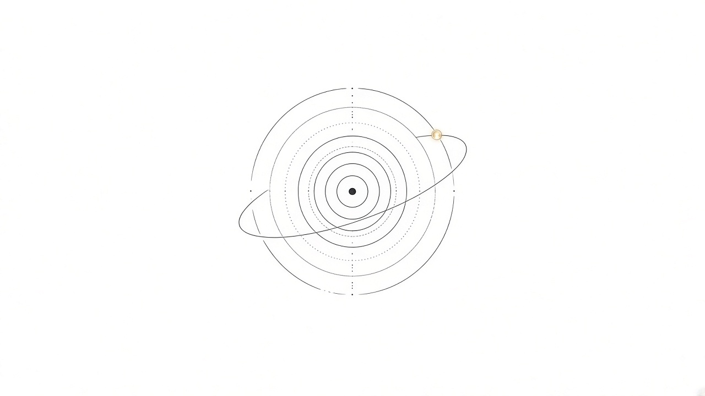

中文 · English

智子 / Sophon
个人多 Agent 系统——不是又一个聊天 App。
智子是沈马成日常在跑的那套 agent 栈的名字。对外英文用 Sophon（好念）；中文仍用「智子」，不拿拼音 Zhizi 硬推给英文读者。
人读版可证伪 · 先看 spine
一个人。多个 AI 席位。一份共享记忆。硬安全闸门。目标是少 babysitting，不是多开窗口。
一屏看懂
- 共享 Memory Hub——站立决策与回执活在对话之外，新 agent 能找回上下文。
- 席位互补——体验前台（如 Grok Bot）、云/代码执行席、常驻主机各干各的。
- 组会 vs 私聊——群里对齐；重活在私聊车道。
- 安全是代码——提议 / 执行 / 以主人名义说话分开，重大动作留回执。
它不是什么
- 不是今天就能在应用商店下载的消费级产品。
- 不是「一个超级大群聊包办一切」。
- 不是声称全部运行时代码已开源（公开的是研究与协议；私有运行时仍私有）。
更深的人读长文（约 26 页）
公开分享版《长期记忆不是向量库 — 多 Agent 行动连续性设计》：
- 长期记忆 field guide（网页）
下一步去哪
- 人读 / 协作脊柱： spine（中文）
- 技术入口（架构+安全）： starshard-ai/architecture-v1
- 公开组织仓： github.com/starshard-ai
- 机器索引： llms.txt
Logo
临时标识（AI 草稿）：同心轨 + 一点光。之后可交设计师精修替换。